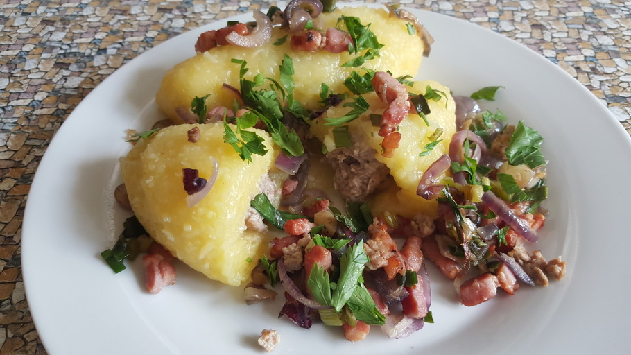

Cepelinai

Dish Description
Cepelinai are potato dumplings made from grated and riced potatoes and stuffed with ground meat, dry curd cheese or mushrooms. It has been described as a national dish of Lithuania, and is typically served as a main dish.
The name of Cepelinai come from their shape that resembles a Zeppelin airship. Cepelinai are typically around 10 to 20 cm long, although the size depends on where they are made - in the western counties of Lithuania, Cepelinai are made bigger than in the east.
Ingredients
- 1 pound ground pork, or an equal mix of pork, beef, and veal
- 1 medium onion, peeled and finely chopped
- 1 1/2 teaspoons kosher salt
- 1/4 teaspoon freshly ground black pepper
- 1 large egg, beaten
- 8 large Idaho potatoes, peeled and finely grated, about 5 pounds
- 2 large Idaho or Russet potatoes, about 1 1/2 pounds, peeled, boiled, and riced
- 1 medium onion, finely grated
- 1 1/2 teaspoons kosher salt, more as needed
- 1 tablespoon cornstarch
- 1/2 pound bacon, diced
- 1 large onion, coarsely chopped
- 1 cup sour cream
- Freshly ground black pepper, to taste
- 1 to 2 tablespoons milk, as needed
- 1 lemon, juiced
Steps
- In a large bowl, mix together ground meat, finely chopped onion, the salt, a few grinds of pepper, and the egg until well combined.
- Cover and refrigerate until ready to use.
- Add the lemon juice to the raw grated potatoes so they don't turn brown.
- Place them in a fine-mesh cheesecloth or cotton dishtowel, and twist over a large bowl to get rid of the excess water.
- Pour off the water, reserving the potato starch at the bottom of the bowl.
- Unwrap the cheesecloth and place the raw potatoes in the bowl with the potato starch you reserved from the bottom of the bowl.
- Add the cooked riced potatoes, grated onion, and the salt, more to taste. Mix well.
- Put a large stockpot of well-salted water on to boil.
- To form the zeppelins, take about 1 cup of dumpling mixture and pat it flat in the palm of the hand.
- Place 1/4 cup or more of meat mixture in the center and, using slightly dampened hands, fold the potato mixture around the meat into a football shape, sealing well. Continue until both mixtures are used.
- Carefully lower dumplings (in batches if necessary to prevent crowding) into salted, boiling water to which 1 tablespoon of cornstarch has been added (to prevent dumplings from falling apart).
- Make sure water returns to the boil; reduce the heat to low and continue simmering until the filling is cooked through, 20 to 25 minutes.
- Remove dumplings with a slotted spoon or strainer, drain briefly on a clean dish towel and place on a heated platter.
- While the dumplings are boiling, make the gravy. In a medium skillet, fry the bacon and chopped onion until tender.
- Drain and combine with sour cream and black pepper. Thin with 1 to 2 tablespoons milk if necessary.
- Ladle the gravy over the dumplings or pass the gravy at the table.